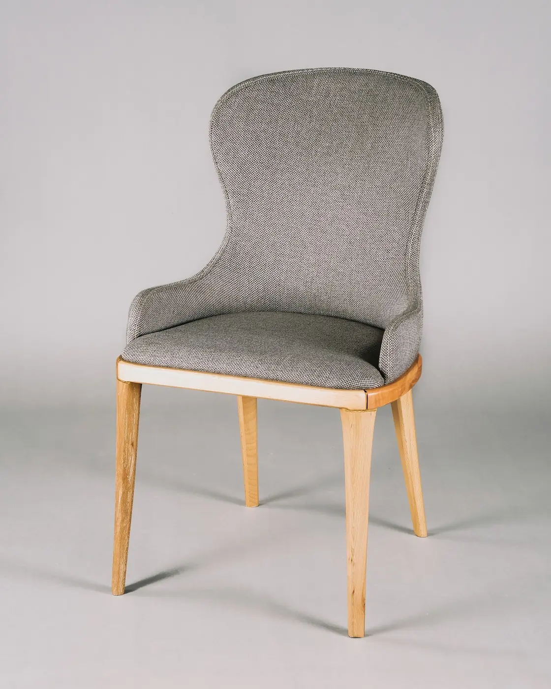
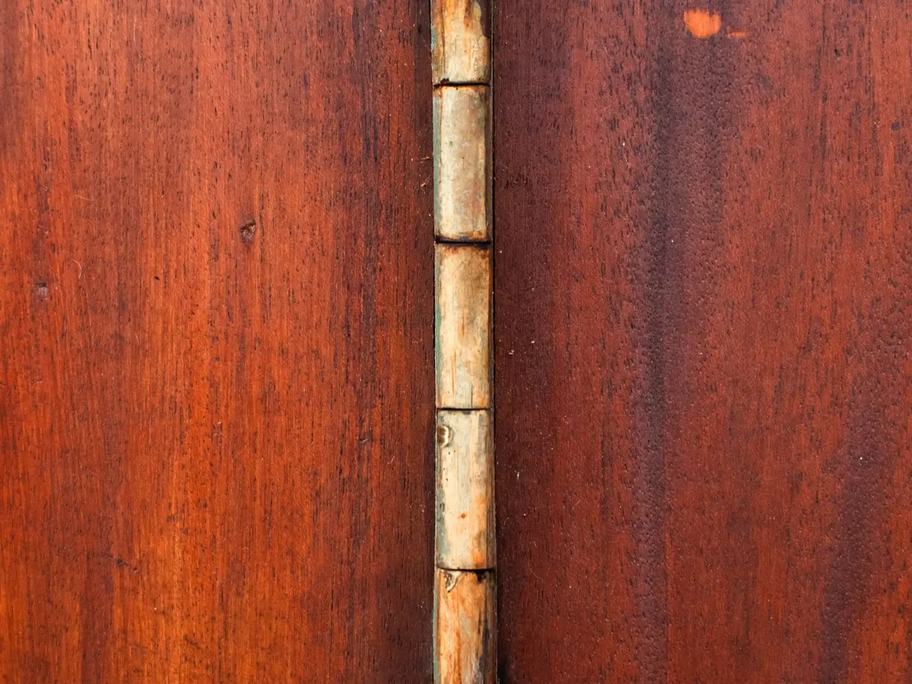

Reading furniture, made slowly
A chair that disappears into the page.
Marlow is a low, deep seat with a headrest that actually holds a book open. Built in small batches from ash, wool, and brass.

Features
Three things a reading chair must do.
-
01
Hold the book, not your neck
The wing is pitched so a paperback rests without your hands. You can turn a page and come back to the same angle.
-
02
Quiet on a wooden floor
Felt glides and a damped rocker. No squeak when you shift, no scrape when you pull it toward the lamp.
-
03
A seat you can stay in
Wool cushion, pocketed for a notebook. The depth is cut for an evening, not a meeting.
Craft
Ash, wool, and a single brass bolt.
Frames are steam-bent in our workshop and left unfinished on the inside, so the grain stays visible where your hand rests. Each chair is numbered under the seat.
- Frame
- European ash
- Cushion
- Undyed wool
- Lead time
- 6-8 weeks

Atelier
Visit the room before you order.
Fittings are by appointment on weekday afternoons. Bring the book you are actually reading. We adjust the wing while you sit.
Book a sit
Tell us a day that works. We reply within two working days.
Write the studio